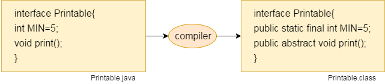
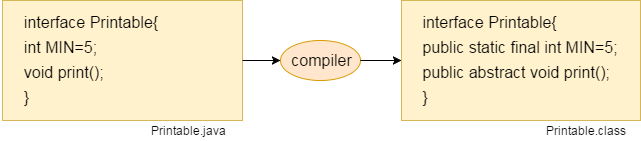

Object-Oriented Programming is a methodology or paradigm to design a program using classes and objects. It simplifies software development and maintenance by providing some concepts:
combination of state and behaviour.
object is instance of class. == object is representation of class.
collection of objects.
Inheritance in Java is a mechanism in which one object acquires all the properties and behaviors of a parent object. It is an important part of OOPs.
Inheritance represents the IS-A relationship which is also known as a parent-child relationship.
For Method Overriding (so runtime polymorphism can be achieved).
For Code Reusability.
Single inheritance.
multiple inheritance.
Hierarchical inheritance.
multiple inheritance.
hybrid inheritance.
When a class inherits another class, it is known as a single inheritance.

When there is a chain of inheritance , it is known as multilevel inheritance.
Multiple child class inherit the single parent class.
To reduce the complexity and simplify the language, multiple inheritance is not supported in java. Consider a scenario where A, B, and C are three classes. The C class inherits A and B classes. If A and B classes have the same method and you call it from child class object, there will be ambiguity to call the method of A or B class. Since compile-time errors are better than runtime errors, Java renders compile-time error if you inherit 2 classes. So whether you have same method or different, there will be compile time error.
one class inherit the multiple parent class and also multiple child class inherit the one parent class.

For Code Reusability.
super can be used to refer immediate parent class instance variable.
super can be used to invoke immediate parent class method.
super() can be used to invoke immediate parent class constructor.
A class which is declared with the abstract keyword is known as an abstract class in Java. It can have abstract and non-abstract methods (method with the body).
Abstraction is a process of hiding the implementation details and showing only functionality to the user.
An interface in Java is a blueprint of a class. It has static constants and abstract methods.
The interface in Java is a mechanism to achieve abstraction. There can be only abstract methods in the Java interface, not method body. It is used to achieve abstraction and multiple inheritance in Java.
 

To specify the access of method.
The access level of a private modifier is only within the class. It cannot be accessed from outside the class.
The access level of a default modifier is only within the package. It cannot be accessed from outside the package. If you do not specify any access level, it will be the default.
The access level of a protected modifier is within the package and outside the package through child class. If you do not make the child class, it cannot be accessed from outside the package.
The access level of a public modifier is everywhere. It can be accessed from within the class, outside the class, within the package and outside the package.
Encapsulation in Java is a process of wrapping code and data together into a single unit, for example, a capsule which is mixed of several medicines.
We can create a fully encapsulated class in Java by making all the data members of the class private. Now we can use setter and getter methods to set and get the data in it.
The Java Bean class is the example of a fully encapsulated class. in Java is a process of wrapping code and data together into a single unit, for example, a capsule which is mixed of several medicines.
encapsulation in java We can create a fully encapsulated class in Java by making all the data members of the class private. Now we can use setter and getter methods to set and get the data in it. The Java Bean class is the example of a fully encapsulated class.